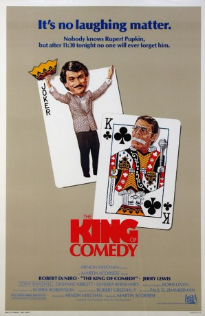
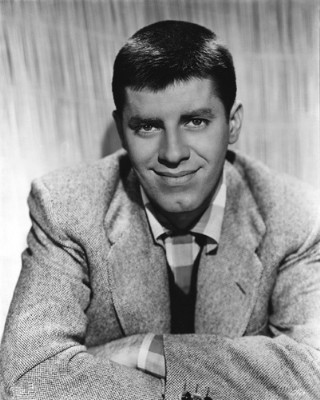
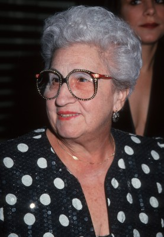
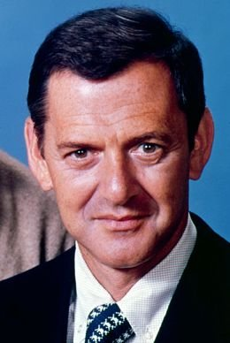
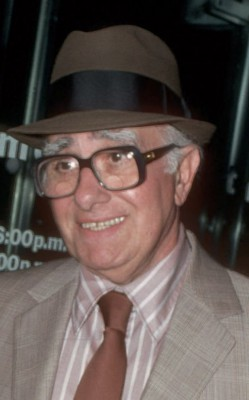

#6823 King of Comedy
Alternativ: The King of Comedy
Auszeichnungen: 1 BAFTA-Awards gewonnen
 
 IMDB-Wertung: 7.8 / 10
IMDB-Wertung: 7.8 / 10  Metascore: 0
Metascore: 0 
Rupert Pupkin is obsessed with becoming a comedy great. However, when he confronts his idol, talk show host Jerry Langford, with a plea to perform on the Jerry's show, he is only given the run-around. He does not give up, however, but persists in stalking Jerry until he gets what he wants. Eventually he must team up with his psychotic Langford-obsessed friend Masha to kidnap the talk show host in hopes of finally getting to perform his stand-up routine.
Jahr: 1982
Dauer: 108 Minuten
FSK: 6
Land: USA Studio: 20th Century FoxTonspuren:
Untertitel: Englisch,
Auflösung: 1080p (1920x1040) Größe: 9123 MB
Genre: Thriller, Drama, Komödie, Krimi
Regisseur:  Martin Scorsese
Martin Scorsese
Drehbuch: Paul D. Zimmerman
Soundtrack:
Darsteller:
 Robert De Niro als Rupert Pupkin
Robert De Niro als Rupert Pupkin-  Jerry Lewis als Jerry Langford
- Diahnne Abbott als Rita Keane
- Sandra Bernhard als Masha
- Marta Heflin als Young Girl
-  Catherine Scorsese als Rupert's Mom
- Liza Minnelli als Liza Minnelli , credit only
- Shelley Hack als Cathy Long
- Joe Strummer als Street Scum
 Ellen Foley als Street Scum
Ellen Foley als Street Scum- Joyce Brothers als Dr. Joyce Brothers
- Victor Borge als Victor Borge
 Kim Chan als Jonno
Kim Chan als Jonno Tony Devon als Plainclothesman
Tony Devon als Plainclothesman Martin Scorsese als TV Director
Martin Scorsese als TV Director-  Tony Randall als Tony Randall
-  Charles Scorsese als First Man at Bar
- Marvin Scott als Newsman
 Mary Elizabeth Mastrantonio als Extra in crowd scene , uncredited
Mary Elizabeth Mastrantonio als Extra in crowd scene , uncredited- Ed Herlihy als Ed Herlihy
- Lou Brown als Band Leader
- Loretta Tupper als Stage Door Fan
- Peter Potulski als Stage Door Fan
- Vinnie Gonzales als Stage Door Fan
- Whitey Ryan als Stage Door Guard
- Doc Lawless als Chauffeur
- Katherine Wallach als Autograph Seeker
- Charles Kaleina als Autograph Seeker
- Richard Baratz als Caricaturist
- Cathy Scorsese als Dolores
- Chuck Low als Man in Chinese Restaurant
- Leslie Levinson als Roberta Posner
- Alan Potashnick als Man at Telephone
- Michael Kolba als Man at Telephone
- Robert Colston als Man at Telephone
- Ramón Rodríguez als Man at telephone
- Chuck Coop als Man at Telephone
- Sel Vitella als Man at Telephone
- Margo Winkler als Receptionist
- Tony Boschetti als Mr. Gangemi
- Mick Jones als Street Scum
- Paul Simonon als Street Scum
- Kosmo Vinyl als Street Scum
- Pearl Harbour als Street Scum
- Gary Salter als Street Scum
- Jerry Baxter-Worman als Street Scum
- Don Letts als Street Scum
- Matt Russo als Cabbie
- Thelma Lee als Woman in Telephone Booth
- George Kapp als Mystery Guest
Datei: X:\1982\King of Comedy (1982, FSK6, 1920x1040).mkv seit 30.08.2017
Festplatte: HD 1980-1986
 Es gibt insgesamt 31 Filme in der Gruppe '1982'
Es gibt insgesamt 31 Filme in der Gruppe '1982'